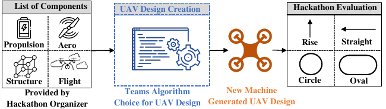
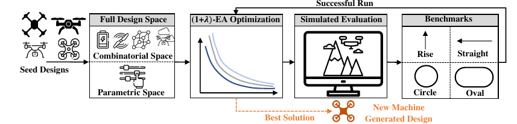
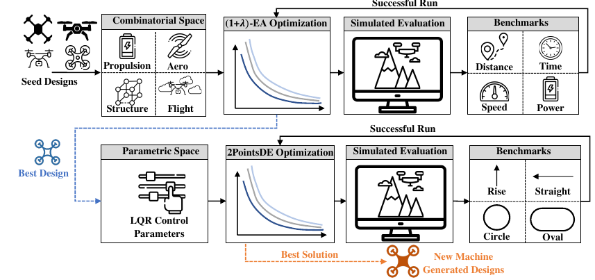
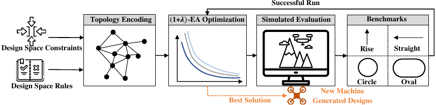
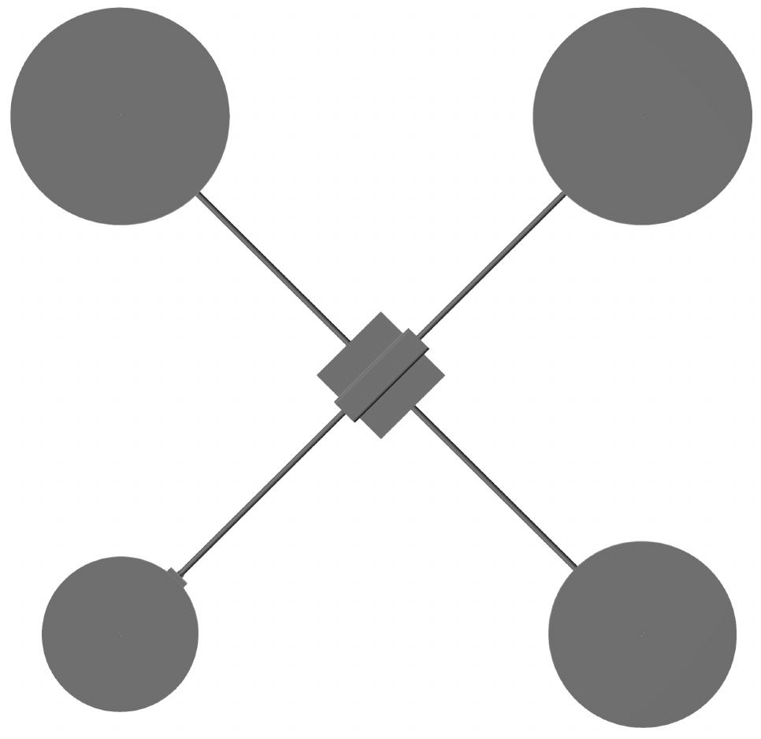
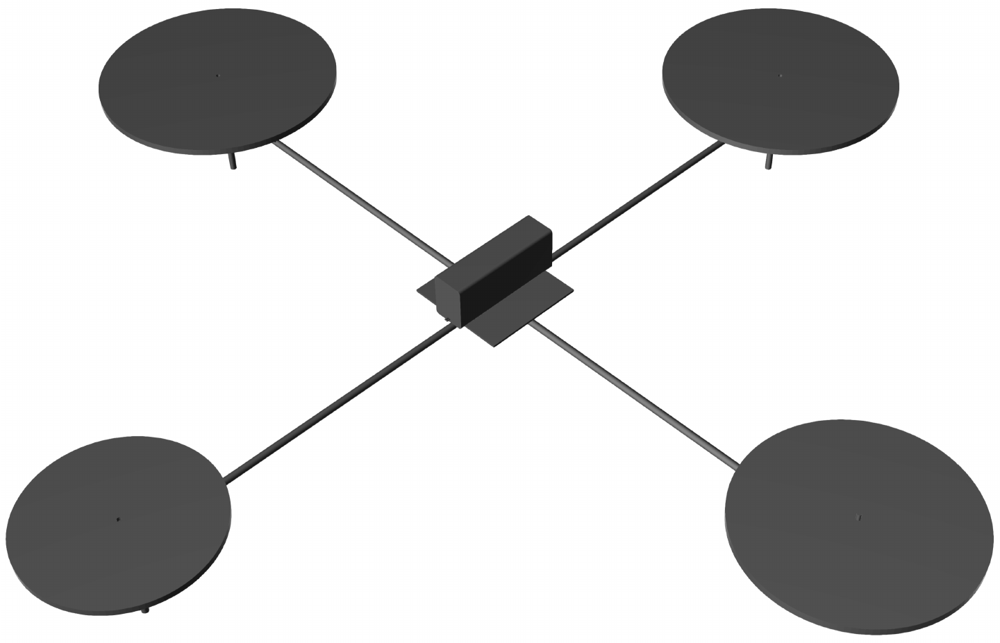
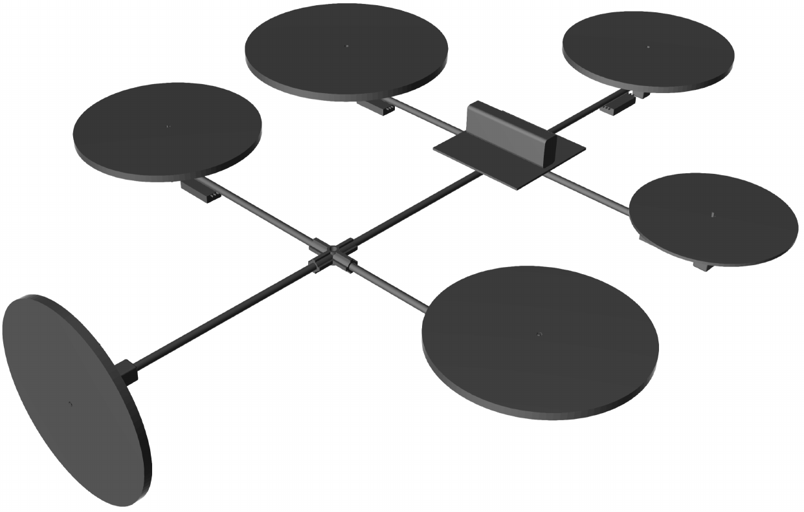
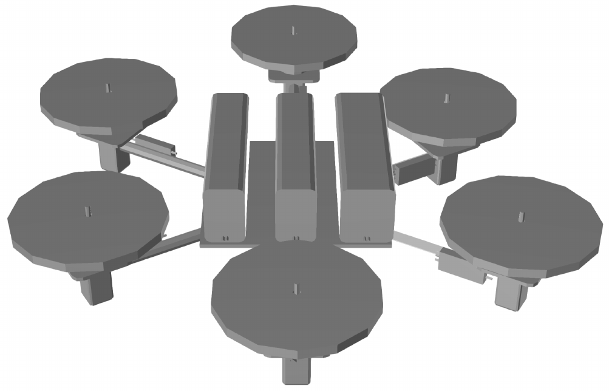
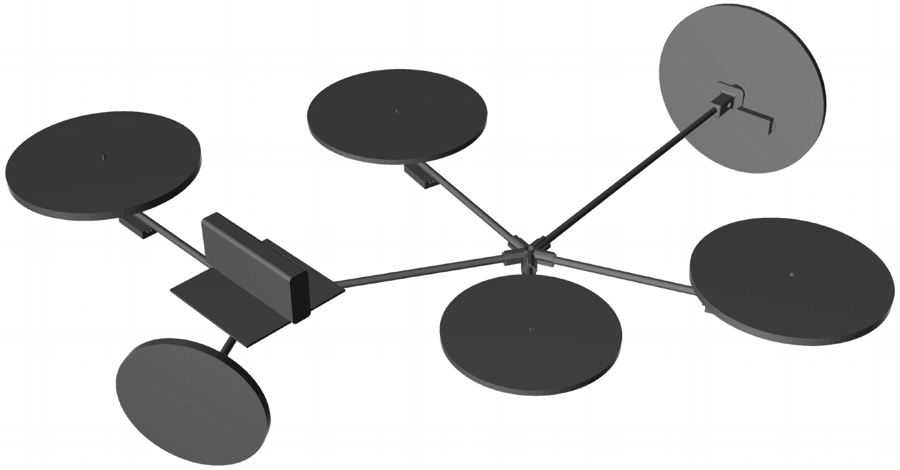

SDCPS aims to develope tools and algorithms to augment human designers with AI co-designer.
Motivation
Cyber physical systems (CPS) are instrumental to current and future developement in Autonomous Systems. These systems and platforms integrate cyber and physical subsystems, and the enormous complexity of the resulting CPS has made their engineering design a daunting challenge. CPS design is a complex endeavor that involves many domains – from cyber (e.g., software, control, computing, and communication) to physical (e.g., structural, mechanical, thermal, etc.) to manufacturing – and upwards of hundreds of domain-specific tools orchestrated by large teams of engineers with extensive domain knowledge and subject matter expertise. Current engineering design processes start with requirements-driven decomposition into discipline-specific design flows that, at their core, are concurrently running sequential decision-making processes that involve generating candidate architectures; evaluating, selecting, and refining options; and integrating the design until requirements are satisfied. The goal of the Symbiotic Design for CPS (SDCPS) program is to develop AI-based approaches to enable correct-by-construction design of CPS. SDCPS seeks to reduce the time from CPS inception to deployment from years to months, and enhance innovation in design.
Problem Setting
We demonstrate the application of proposed automated exploration techniques in a DARPA-organized CPS Desgin Challenge. The goal is to automatically create new designs of an unmanned aerial vehicle (UAV) that is tasked with the successful completion of a set of missions that stress the agility, endurance, and accuracy of the UAV design. A list of components with specifications, and a few starting seed designs is provided.

Methodology
We experiment with three strategies to tackle the search problem, each using gradient-free optimization techniques to automatically create UAV designs.
Holistic Optimization from seed design on the entire parameter space of the design.

Sequential Optimization from seed design, but separating the combinatorial and parametric portions of the design space.

Architecture Topology Generation where certain rules on connections and composition of an UAV system are enforced.

Design Representation
UAV designs are represented as directed multi-graphs $ \mathcal{G}=(\mathcal{V},\mathcal{E}) $ to accommodate multiple connections between a set of components. Where $\mathcal{V}$ is the set of vertices in the graph representing the components of the UAV and $\mathcal{E}$ is the set of edges in the graph which represent the connections between the components. In our experiments, the nodes in graph $\mathcal{G}$ could be one of these components: batteries, motors, propellers, wings, servos, tubes, flanges, plates or hub connectors. The edges in graph $\mathcal{G}$ could be mechanical assemblies (concentric or coincident joints), electrical connections or logical links such as a software socket that transmits data from a sensor to a computer (logical connection) or an assembly mating joint (physical connection).
Design Optimization
We aim to solve two optimization problems:
[\operatorname{argmax}{{s_i}\in S}(f(g(\mathcal{G}{init}, {s_i})))]
Where the function $g$ is a realization function that takes a seed design $\mathcal{G}_{init}$, with a specification $s_i$ and turns it into a full design, and the function $f$ is the scoring function for a given design on all the benchmarks.
[\operatorname{argmax}{{a_i}\in A}(f(h(\mathcal{V}{0}, {a_i} m)))]
Where the function $h$ is a realization function that takes an initial node $\mathcal{V}_0$, a set of actions ${a_i}$ that describes adding an component to the existing design, and the integer $m$ is the number of maximum iterations.
Experiments and Results
The designs generated are evaluated and benchmarked in a flight dynamic simulation.


Figure 1: Top and perspective view of the best design using the quadrotor seed design and sequential optimization.
Note that there is a noticeable asymmetric desgin choice present where one of the propellers has a smaller diameter than others.



Figure 2: Top three scoring designs using architectural topology generation.
The designs found shows interesting design choices that is rarely seen in human generated designs.
Open Research Directions
- System design representation
- Needs to be compact and flexible
- Needs to be easily optimizable
- Optimization of representations
- Move towards more interpretable optimization process
- Improve sample efficiency in the optimization
Publications
-
Combinatorial and Parametric Gradient-Free Optimization for Cyber-Physical System Design
Hongrui Zheng et al.
IEEE Workshop on Design Automation for CPS and IoT (DESTION), ICCPS, 2022.
[PDF] -
Gradient-Free Multi-Domain Optimization for Autonomous Systems
Hongrui Zheng, Johannes Betz, Rahul Mangharam
arXiv preprint, 2022.
[arXiv] | [PDF]
Contributors
- Penn:
- Rahul Mangharam (PI)
- Hongrui Zheng
- Johannes Betz
- Siemens:
- Arun Ramamurthy
- Hyunjee Jin
- Thomas Gruenewald (PM)
Citation
@INPROCEEDINGS{9805397,
author={Zheng, Hongrui and Betz, Johannes and Ramamurthy, Arun and Jin, Hyunjee and Mangharam, Rahul},
booktitle={2022 IEEE Workshop on Design Automation for CPS and IoT (DESTION)},
title={Combinatorial and Parametric Gradient-Free Optimization for Cyber-Physical System Design},
year={2022},
volume={},
number={},
pages={34-41},
keywords={Design automation;Conferences;Cyber-physical systems;Benchmark testing;Software;Data models;Space exploration;architectural design;design exploration;design optimization;modelling;simulation},
doi={10.1109/DESTION56136.2022.00012}}